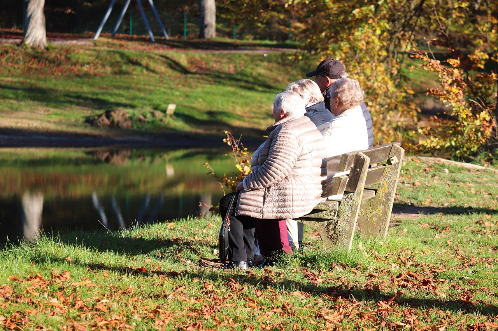

Un loc unde vârsta devine liniște, iar fiecare zi înseamnă grijă și demnitate.
La Azilul Grădinii Fericirii, oferim mai mult decât un spațiu de îngrijire — oferim un cămin, un loc sigur, cald și primitor unde seniorii trăiesc cu demnitate, respect și bucurie.
Fie că este vorba despre o ședere permanentă sau temporară, la noi seniorii sunt tratați cu grijă, empatie și profesionalism.